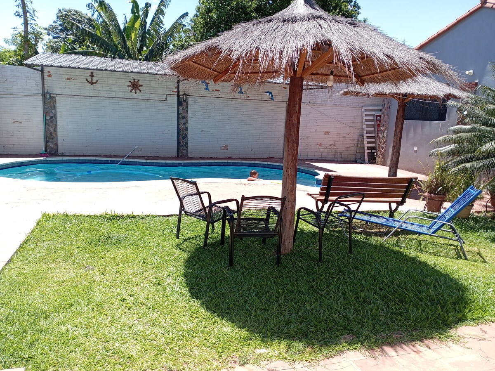

How Residential Programs Can Balance Safety, Privacy, and Independence
A practical way to ask whether a home's safeguards support the person while leaving room for an ordinary adult life.

A residential program can protect safety, privacy, and independence by starting with the individual: the life they want, the help they need, and the particular risks that require attention. Support should be specific enough to address those risks, with a clear reason for any restriction and a process for reviewing it.
Families should not have to accept “Everyone follows the same rules” as the whole answer. They also need more than a cheerful promise that residents can do whatever they like. A useful conversation gets down to everyday details. Can the person have time alone? Choose an activity? Ask for help? Say that something feels wrong? What happens when those needs conflict with the way a household is organized?
Those questions are worth asking before a move, while there is time to compare the provider's answers with the adult's preferences.
Begin with the life the person is trying to live
It is easy for a housing discussion to begin with a list of things that must not happen. Families may have very good reasons for those worries. But a plan also needs to describe what a person should be able to enjoy.
That might include walking outside with someone they like, choosing when to listen to music, keeping a familiar chair, visiting friends, or having a quiet place to recover from a busy afternoon. Someone who needs help with every part of personal care still has a life beyond the care tasks.
Try asking the adult and people who know them well:
- What makes a good day?
- Which choices matter most?
- When do they want company, and when do they want space?
- What help makes an enjoyable activity possible?
- What do they find intrusive or upsetting?
Write those answers beside the safety concerns. It is easier to judge a proposed arrangement when both are visible.
Ask what a safety measure is actually for
“For safety” is the beginning of an explanation. Families need to know what the measure is supposed to prevent and how it relates to this person.
Consider a hypothetical adult who enjoys preparing a snack but needs help using one kitchen appliance. The first discussion could be about suitable equipment, instructions the person can use, and support with that task. A rule preventing them from entering the kitchen would affect much more of their day. The team should be able to explain why any proposed limitation is needed and what other options were considered.
This is a discussion example, not a recommendation to change anyone's established safety arrangements without assessment. The useful habit is to ask about the smallest part of the activity that needs support, rather than treating the whole activity as off limits.
Our article What Makes a Home Safe for an Autistic Adult? looks at the wider mix of environmental, relational, and everyday safeguards families can consider.
Privacy is part of receiving good support
Privacy matters in a bedroom, during personal care, in a conversation, and in the way records are handled. The UN Convention on the Rights of Persons with Disabilities addresses protection from arbitrary or unlawful interference with privacy and protection of personal and health information. It does not treat living in a supported setting as a reason to lose those protections. UN: Article 22, Respect for privacy
On a visit, ask how staff explain personal care before beginning it, protect the person's body from unnecessary exposure, and handle private discussions away from other residents. Ask what happens when the person does not want a particular staff member's help.
Also ask about photographs, family updates, and technology. Who decides whether a picture can be shared? Who can read the person's records? If monitoring equipment is proposed, what does it record, who can access it, and why is it necessary for this individual?
These questions need local legal and safeguarding advice where appropriate. A camera or sensor should not be presented as an automatic substitute for enough skilled people to provide care.
Independence can vary from one activity to the next
A person might choose their clothes but need help fastening buttons. They might know exactly where they want to go but need someone to organize transportation and accompany them. They might prefer someone else to prepare lunch so they can spend their energy on an activity they enjoy.
Ask what the person wants to do for themselves, what they want help with, and what they would rather not spend the day practising. Support can preserve choice even when a task cannot be completed alone.
The aim is also not to withdraw help simply because someone managed without it once. A successful outing with familiar staff does not tell you how that person will manage with different people, a disrupted routine, or an unfamiliar route. Discuss the circumstances, not just whether the task was “completed.”
Supporting Choice When an Adult Cannot Live Completely Independently offers a fuller discussion of everyday decisions that can remain with the adult.
A restriction needs a reason and a review
Some support decisions involve serious risks and require qualified assessment. Families should ask who has authority to make the decision, how the adult will participate, and how anyone can request reconsideration.
One useful, location-specific example is the U.S. Medicaid rule for certain home- and community-based services. It protects privacy, dignity, and individual choice. In provider-owned or controlled residential settings, modifications to specified conditions require an individually assessed need and documentation of alternatives, proportionality, review, and informed consent. These are U.S. program requirements, not a statement of Paraguayan law. 42 CFR 441.301
Wherever a person lives, families can ask for plain-language answers:
- What concern are we trying to address?
- What does the adult want or communicate about this arrangement?
- Which less intrusive supports have been considered or tried?
- Who has checked that the proposal is lawful and appropriate?
- How will we know whether it helps or causes another problem?
- When will it be reviewed, and who can ask for an earlier review?
A diagnosis alone does not explain why a particular house rule fits a particular person. Nor does one resident's support need automatically explain a restriction affecting every housemate.
Ask how the household handles competing needs
Shared living involves compromise. One resident may love loud music; another may find it exhausting. Someone may enjoy visitors at a time when a housemate needs a quieter room. A thoughtful provider should be able to talk about space, scheduling, equipment, individual assistance, and respectful negotiation.
NICE's guidance for autistic adults encourages attention to communication and the physical environment, including personal space, lighting, and noise. The person's experience of a room or activity can matter as much as what that room looks like on a tour. NICE: Autism in adults
There will be practical limits. Transport, staffing, money, and the building itself affect what a provider can offer. Families need those limits explained honestly before agreeing to a placement. “We encourage community outings” means little if nobody can say how the adult will actually get out of the house.
Make sure concerns can reach someone outside the immediate care team
A resident may need help to report a concern. That help should not depend entirely on the person whose conduct they are worried about.
Ask who can support the adult to speak, write, use their communication device, or otherwise express a problem. Who listens if a family disagrees with a restriction? Is there an independent advocate, regulator, complaints service, or another appropriate local route? How are urgent safeguarding concerns handled?
The answer should be usable on a difficult day. A policy in a folder is not enough if the adult cannot access it or the family does not know whom to call.
For related planning questions, read How Families Can Protect a Vulnerable Adult Without Erasing Their Voice.
What You Can Do This Week
Choose one part of daily life, such as a meal, an outing, or private time at home. Write down what the adult enjoys, what help is needed, and what currently gets in the way.
Then ask one useful question about the arrangement: could a change in support make it easier for the person to participate or choose? Bring the question to the people responsible for the plan. Do not remove an established safeguard without an appropriate review.
If you are visiting providers, take a short list of the adult's priorities and ask how each would work on an ordinary weekday. Compare concrete answers, including limitations, rather than relying on the tour's general feeling.
About Casa de SAM
Casa de SAM is a developing vision for lifelong housing and support in Paraguay, not an operating residential service. Its proposed community needs to be designed around adults who have preferences, relationships, privacy, and lives of their own. Local legal requirements, staffing, individual support arrangements, and independent oversight would all need to be established before care could begin.
Families want their loved ones to be safe. They also want them to feel at home. A good residential plan should keep both of those hopes visible in the decisions made every day.
Information reviewed October 30, 2026. This article is educational, not individualized legal or clinical advice. Consent, safeguarding, monitoring, and restrictions require review under applicable local rules. The U.S. example does not establish eligibility for services or legal requirements in Paraguay.